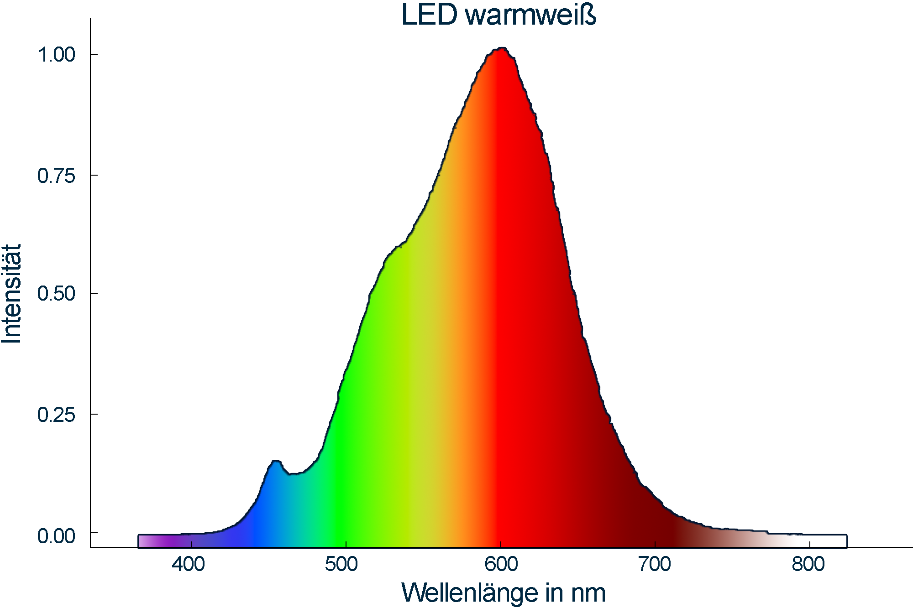
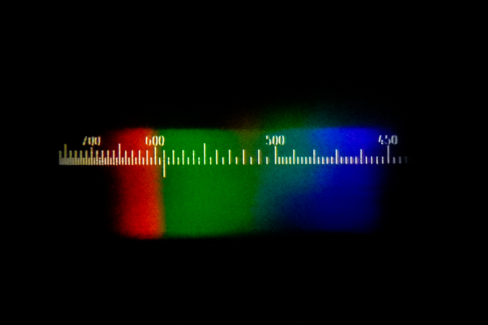

CCD-Spektrometer



LED-Lampen funktionieren ähnlich wie Leuchtstoffröhren. Eine LED (Light Emitting Diode) sendet kurzwelliges blaues Licht aus, das dann einen Leuchtstoff anregt, der ein breiteres Spektrum von Licht abstrahlt. Durch unterschiedliche Leuchtstoffe kann die Lichtfarbe variiert werden. LED-Lampen sind energiesparend, weil keine Strahlung im nicht sichtbaren Bereich erzeugt wird.